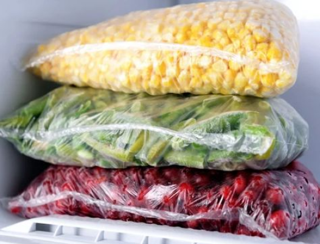

A culinária é mais do que a combinação de ingredientes; é uma arte que transcende o simples ato de cozinhar. Em cada prato preparado, há uma história, um pedaço da cultura e um toque de tradição que atravessa gerações. O sabor é apenas uma das dimensões da gastronomia – o que ela realmente oferece vai além disso. A experiência culinária envolve texturas, cores, aromas e uma conexão que desperta memórias e sentimentos. Cada receita carrega o carinho de quem a prepara, seja para nutrir, celebrar ou confortar. Cozinhar é, muitas vezes, uma forma de amor em ação, um gesto que toca a alma de quem compartilha a refeição.
Aprenda como fritar alimentos sem espirrar óleo!
@usuário1
O segredo para deixar molhos de tomate industrializados mais caseiros
@usuário2
Duas ideias para quando o ovo não quebra como esperado.
@usuário3
Como substituir o leite nas receitas: opções para intolerantes à lactose e veganos
@usuário3
Dicas para escolher frutas maduras e saborosas no mercado
@usuário3
A comunidade do ReVirado divide aqui as dicas mais úteis que utilizam ou sentem que precisam compartilhar, diretamente da cozinha de casa!
@usuário
“COMO CONGELO?”: Abasteça seu congelador com excelentes ideias
Já se perguntou como conservar seus alimentos? Quando congelados, os alimentos tendem a prolongar a sua...
Leia mais...
Curtir
Salvar para depois
@usuário
“QUAL A MELHOR CARNE PARA HAMBÚRGUER?”: Chega de dúvidas na
hora de escolher
Já estagnou no mercado na hora de escolher a carne ideial para seu hambúrger?
Isso, na verdade...
Leia mais...
Curtir
Salvar para depois
@usuário
CHEIRO-VERDE, CEBOLINHA, SALSINHA E COENTRO: Entenda as
diferenças e seus usos
“É tudo mato.” Sim, mas cada um tem suas respectivas características. A partir de
hoje, você...
Leia mais...
Curtir
Salvar para depois